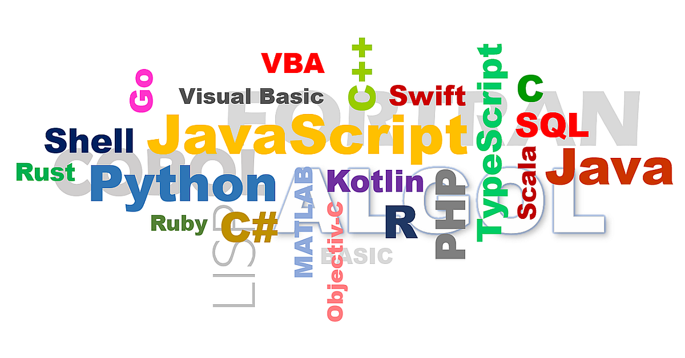

Co jsou programovací jazyky?
Programovací jazyky jsou formální systémy používané k vytváření softwaru. Umožňují vývojářům komunikovat s počítači a vytvářet aplikace, webové stránky a další technologie.
Kategorie programovacích jazyků
- Procedurální jazyky: Zaměřené na sekvenci kroků, např. C, Pascal.
- Objektově orientované jazyky: Zaměřené na objekty a třídy, např. Java, C++.
- Funkcionální jazyky: Zaměřené na funkce a jejich aplikace, např. Haskell, Lisp.
- Skriptovací jazyky: Určené pro automatizaci a web, např. Python, JavaScript.
Populární programovací jazyky
Python
Python je univerzální jazyk známý svou čitelností a jednoduchostí. Používá se pro webový vývoj, datovou analýzu a umělou inteligenci.
JavaScript
JavaScript je klíčový jazyk pro webové stránky. Umožňuje interaktivitu a dynamický obsah.
Java
Java je populární pro podnikové aplikace a mobilní vývoj díky své přenositelnosti a bezpečnosti.
C++
C++ je výkonný jazyk používaný ve hrách, systémech a aplikacích s vysokým výkonem.
Historie programovacích jazyků
Od prvních strojových kódů přes Assembly až po moderní vysokoúrovňové jazyky jako Python a Swift, vývoj programovacích jazyků reflektuje potřeby vývojářů a technologie.
Budoucnost programovacích jazyků
Nové jazyky, jako Rust a Go, získávají popularitu díky svému výkonu a bezpečnosti. Budoucnost může přinést více jazyků zaměřených na paralelní zpracování a AI.